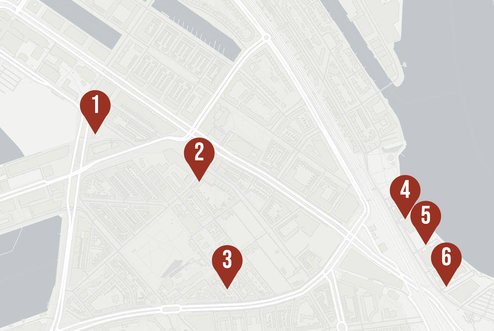

Map of Murals

-
“Roze” by TelmoMiel and Sam Bates
Hillelaan 23, 3072 JC
-
“Pinokkio” by Stefan Thelen
Paul Krugerstraat 20, 3072 GL
-
"Hip-Hop Panda” by Aaron Martin
Johannes Brandstraat 51, 3072 BE
-
Art by Reinier Landwehr
Korte Stadionweg 107, 3077 ME
-
The Open Art Wall
Korte Stadionweg 107, 3077 ME
-
Art by Jorge Charrua
Korte Stadionweg 107, 3077 ME, next to Byewaste